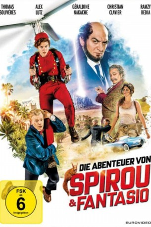
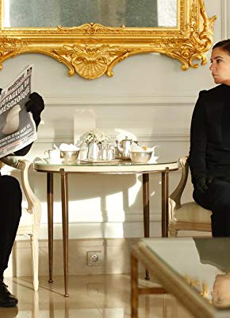

#10605 Die Abenteuer von Spirou & Fantasio
 
 IMDB-Wertung: 3.4 / 10
IMDB-Wertung: 3.4 / 10  Metascore: 0
Metascore: 0 
Die Schergen des Bösewichts Zorglub (Ramzy Bedia) haben den exzentrischen, aber genialen Erfinder Graf von Rummelsdorf (Christian Clavier) entführt. Spirou (Thomas Solivérès), ein kleinkrimineller Hotelpage und Fantasio (Alex Lutz), ein glückloser Reporter auf der Suche nach dem großen Coup, müssen sich gezwungenermaßen zusammenschließen, um den Erfinder und damit den Rest der Welt zu retten. An ihrer Seite ist stets das schelmische Eichhörnchen Pips. In einer abenteuerlichen Verfolgungsjagd zwischen Europa und Afrika geht es für die beiden Helden um alles.
Jahr: 2018
Dauer: 88 Minuten
FSK: 6
Land: Frankreich Studio: EuroVideoTonspuren:
Untertitel:
Auflösung: 1080p (1920x808) Größe: 4618 MB
Genre: Komödie, Abenteuer
Regisseur: Alexandre Coffre
Drehbuch: Juliette Sales, Fabien Suarez, Juliette Sales, Fabien Suarez, Alexandre Coffre
Soundtrack: Éric Neveux
Darsteller:
- Thomas Solivérès als Spirou
 Alex Lutz als Fantasio
Alex Lutz als Fantasio- Géraldine Nakache als Seccotine
 Christian Clavier als Le comte de Champignac
Christian Clavier als Le comte de Champignac Ramzy Bedia als Zorglub
Ramzy Bedia als Zorglub-  Vincent Desagnat als Claude, le jumeau
- Caroline Tillette als L'attachée de presse
- Mark Grosy als Teddy
- Charlotte Gabris als Marie, la jumelle
- Monsieur Poulpe als Le balayeur
- Gunther Love als Le stagiaire
- Philippe Pillavoine als Le volontaire
- Jim Adhi Limas als Le savant japonais
- Julien Sibre als L'assistant scientifique
- Agnès Croutelle als La femme à la montre
 Grégoire Oestermann als Lambert
Grégoire Oestermann als Lambert- Marc Bret als L'assistant conciergerie
- Sylvia Jagieniak als La femme ravissante
- Fabien Baïardi als L'homme d'affaires
- Richard Zanca als L'autre homme d'affaires
- Jean-Marie Paris als Garde du corps couloir 1
- Bertrand Guibert als Garde du corps couloir 2
- Hugo Gastaud als L'ado rockeur
- Justine Pessin Balayre als Hôtesse aéroport
- Arsène Mosca als Vigile portique 1
- Soraya Garlenq als Vigile portique 2
- Lamine Sall als Chauffeur taxi Gantagwa
- Brahim Bihi als Garagiste Gantagwa
- Delphine Baril als Technicienne vidéo
Datei: X:\Comic-Filme\Abenteuer von Spirou & Fantasio, Die (2018, FSK6, 1920x808).mkv seit 31.01.2019
Festplatte: Comicverfilmungen+MusikCD
 Es gibt insgesamt 44 Filme in der Gruppe 'Comic-Filme'
Es gibt insgesamt 44 Filme in der Gruppe 'Comic-Filme'